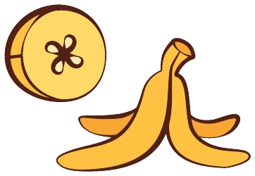

Recrutement
Big Budi Games recrute un renfort
Temps partiel, environ 2 jours par semaine · Montaud, près de Montpellier
Big Budi Games est une jeune maison d’édition de jeux de société basée à Montaud, près de Montpellier. Nous éditons des jeux familiaux, modernes et accessibles, pensés pour être sortis souvent et rejoués à l’infini. Nos trois premiers titres, EDIT, TornaDice et Camino, sont en cours de développement.
Pour accompagner leur sortie, nous cherchons une personne polyvalente et curieuse, qui a envie de découvrir toutes les facettes de l’édition de jeux.
Vos missions
Communication
- Animer nos réseaux sociaux (Instagram, Facebook, LinkedIn)
- Participer à la newsletter et aux contenus du site
- Préparer et tenir le stand en festival
Production
- Aider au suivi de fabrication des jeux
- Relire et vérifier les fichiers et les règles
- Donner un coup de main sur la logistique
Prototypes
- Tester les jeux en cours de développement
- Organiser des parties de test et recueillir les retours des joueurs
- Proposer des améliorations
Le profil que nous cherchons
- Vous aimez les jeux de société modernes et vous y jouez régulièrement
- Vous êtes à l’aise à l’écrit et sur les réseaux sociaux
- Vous êtes autonome, rigoureux et à l’aise avec le public
- Des notions de graphisme, de photo ou de vidéo sont un plus
- Aucun diplôme précis n’est exigé : la motivation compte davantage
Les conditions
